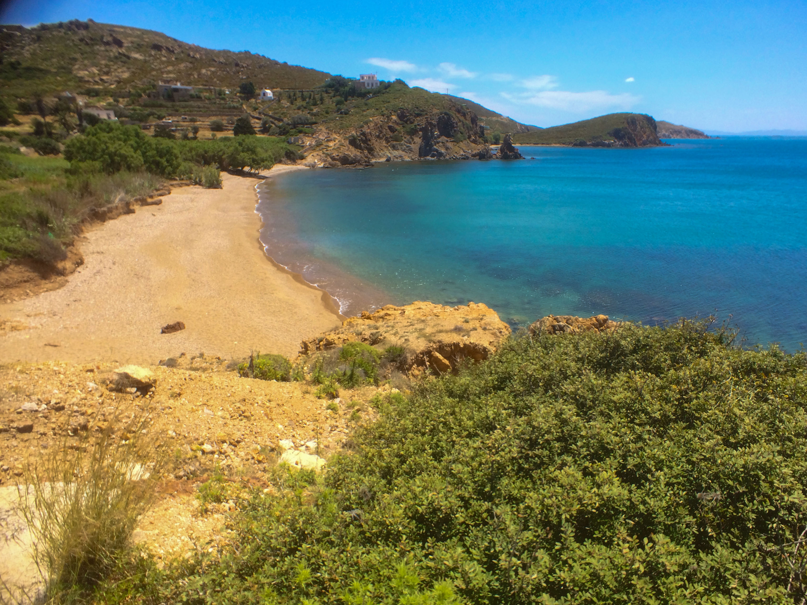
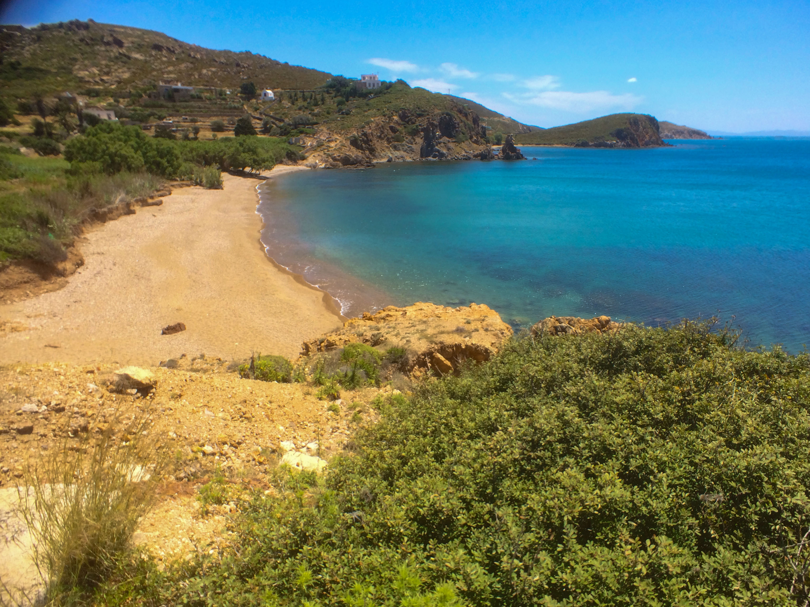

Athens Memory
I had been thinking of visiting this city since I was a young child. Once there, I had the best possible visit. I met someone who showed me the insider's view of Athens. An unforgettable experience.


Memories of Athens
Standing before the Parthenon, I couldn't help but feel the weight of history pressing down on me. The ancient columns, weathered by thousands of years of sun and rain, still stood proud against the azure sky of Athens. I spent hours wandering through the ancient agora, imagining the voices of philosophers that once debated here, shaping Western thought for millennia to come.
In the evenings, I explored the winding streets of Plaka, where tavernas spilled out onto cobblestone alleys and the scent of grilled souvlaki and oregano filled the air. A local musician played rebetiko on his bouzouki while patrons clapped along, drinking ouzo and sharing plates of mezze. These are the moments that capture the soul of Athens - where ancient history and vibrant modern life exist in perfect harmony.


 
